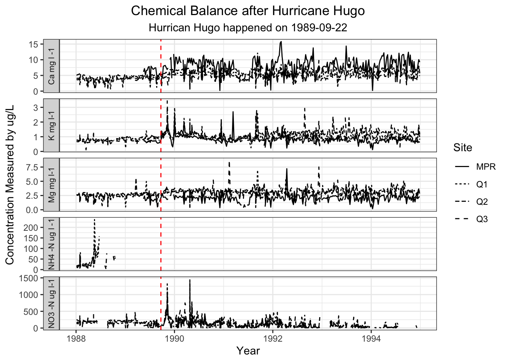

# If working on workbench or do not have these packages installed use this in the Console.
#install.packages(c("tidyverse", "dplyr", "janitor", "here" ))
# Loading in packages that may be used
library(tidyverse)
library(dplyr)
library(janitor)
library(here)
# This is a base R function, no need to install or library :)
source(here("R","Rolling_average.R"))
# Reading in CSV files and assigning into dataframes
brisley_one <- read_csv(here('data','QuebradaCuenca1-Bisley.csv')) %>%
clean_names()
brisley_two <- read_csv(here('data', 'QuebradaCuenca2-Bisley.csv')) %>%
clean_names()
brisley_three <- read_csv(here('data', 'QuebradaCuenca3-Bisley.csv')) %>%
clean_names()
prm <- read_csv(here('data','RioMameyesPuenteRoto.csv')) %>%
clean_names() paper
Background
Following the water quality after hurricane hugo occurred in September 22, 1989. Schaefer et al. (2000) investigated a long-term stream water quality in Puerto Rico before and after the 1989 Hurricane Hugo. The investigation led to finding chemical concentrations such as calcium, nitrate, phosphate, potassium, and magnesium. The chemical potassium increased after the hurricane and stayed elevated for a few years after.
Data
Start loading in libraries and load in data from EDI website provided in the README.md file. While loading in CSV files add clean_names to make all columns lowercase.
Methods
For methods the approach taken was to combine all four dataframes into one to and start selecting, mutating, filtering, arrange, and pivot longer. As well as use a function created for all concentrations.
#use rbind instead of full join. This will allow each row to be treated individually instead of a key
# Joining all csv's into one dataframe
all_brisley <- rbind(brisley_one, brisley_two, brisley_three, prm)
# Create a clean dataframe by filtering, mutating and group by
all_brisley1 <- all_brisley %>%
# Selecting columns that I am interested in.
select(sample_id, sample_date, no3_n, k, mg, ca, nh4_n) %>%
#Using mutate create a column called year, to have only the year
mutate(year = lubridate::year(sample_date)) %>%
#Using filter, grab the dates interested in before and after events
filter(year >= 1988 & year <= 1994) %>%
# Arrange by sample_date to have them in order
arrange(sample_date) %>%
# Pivot_longer to have data together within a column
pivot_longer(cols = c(nh4_n, no3_n, k, mg, ca), # inputting columns we want to add in one
names_to = "stream_ion", # column title
values_to = "concentration") #values of each concentrationResults
When calculating the results for the concentrations interested, a plot was created for each concentration and then combined into one plot. The results will print out on the plot pane.
# Creating plots to see if dataframe works and how it looks
# Plot for NH4
p1 <- ggplot(data= all_brisley, aes(x= sample_date, y=nh4_avg )) + # nh4
# plot as line
geom_line(aes(linetype=sample_id))+
# Add a vertical line to plot
geom_vline(xintercept = as.Date("1989-09-22"), linetype = "dashed", color = "red")+
# Removing x-axis and removing legend
theme(axis.text.x = element_blank(), legend.position = "none")
# Adding source for R to know where the function is stored
source(here("R","Rolling_average.R"))
# Calculating rolling average
rolling_avg <- all_brisley1 %>%
group_by(sample_id, stream_ion) %>%
mutate(rollin_avg = sapply(
sample_date,
moving_average, # using function made from 'Rolling_average.R'
dates = sample_date,
conc = concentration,
win_size_wks = 9)) %>%
ungroup()
# PLOT for Concentrations
p1 <- ggplot(data= rolling_avg, aes(x= sample_date, y=concentration )) + # nh4
# plot as line
geom_line(aes(linetype = sample_id)) + # sample_id does not auto populate
facet_wrap(~stream_ion, scales = "free_y", ncol=1,
strip.position = "left",
# Using labeller to
labeller = as_labeller(c(nh4_n = "NH4 -N ug l -1",
ca = "Ca mg l -1",
mg = "Mg mg l-1",
no3_n = "NO3 -N ug l-1",
k = "K mg l-1")))+
# Add a vertical line to plot
geom_vline(xintercept = as.Date("1989-09-22"), linetype = "dashed", color = "red")+
# Adding and Editinng labels
labs(x = "Year",
y = "Concentration Measured by ug/L",
title = "Chemical Balance after Hurricane Hugo",
subtitle = "Hurrican Hugo happened on 1989-09-22",
linetype = "Site") +
# Adding Theme
theme_bw()+
# Settings for alignment
theme( strip.position = "outside",
plot.title = element_text(hjust = 0.5),
plot.subtitle = element_text(hjust = 0.5),
strip.text = element_text(size =10))
# Printing plot to view
print(p1)
# Save the Plot as a PNG
ggsave(here("figs", "p1_concentrations_plot.png"),
p1,
width = 6, height = 5)With the results we can see that all concentrations fluctuated within a decade after the Hurricane Hugo